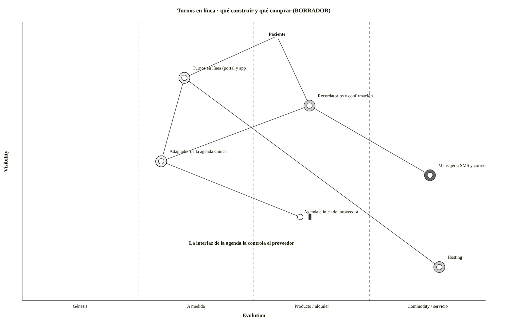
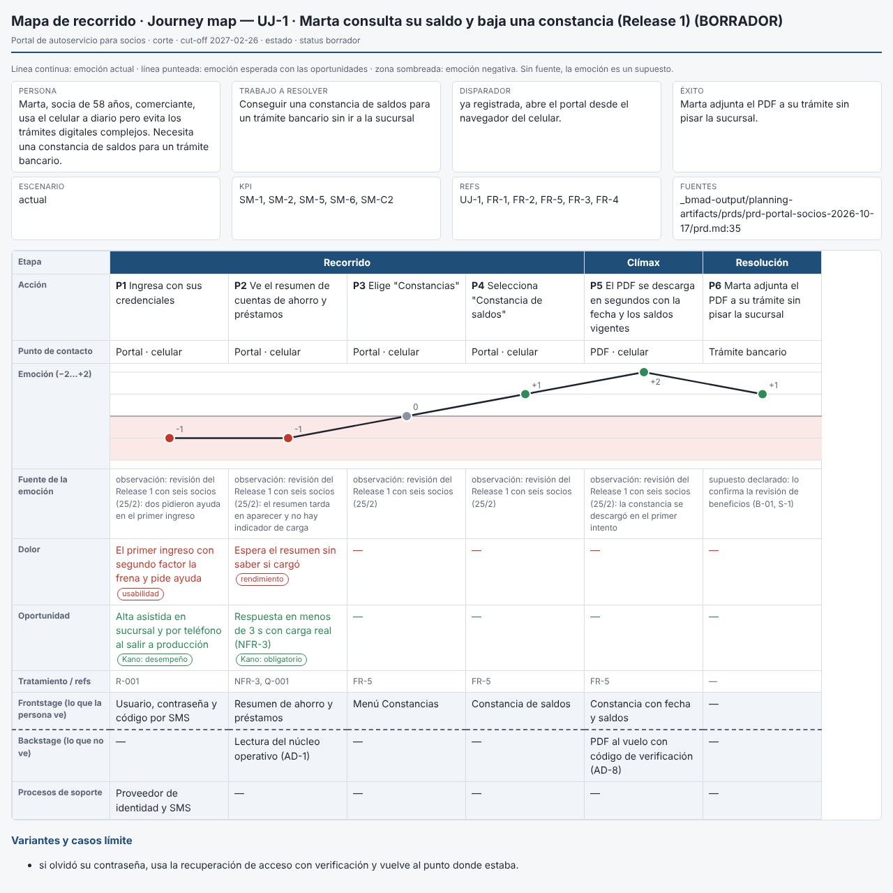
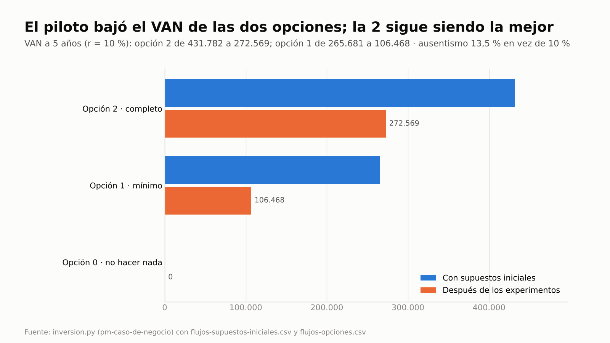

Para directivos y PMO
La estrategia se ejecuta a través de proyectos.
Estrategia
→
Proyectos
→
Resultados
Si los resultados importan,
los métodos también.
La pregunta
¿Cómo gestionar con más eficiencia y foco en valor?
Aplicando
IA, con método.
→ pm-method
código abierto · Claude Code y Cowork
Qué es
Un plugin de Claude Code con una jerarquía fija
PRINCE2 7 · manda
método y ciclo de vida: etapas, puertas, tolerancias
PMBOK 8 · técnicas
EVM, camino crítico, PERT, P×I, VAN
BMAD · especificación
PRD, épicas e historias, de solo lectura
Un control en acción · caso E2E-2
Un cambio de 15.000, aprobado de palabra por quien tenía un límite de 10.000
Presupuesto de cambio fijado por la junta: 12.000
✖ No se puede registrar como aprobado
supera el límite de quien decide y el saldo del presupuesto
→ Pendiente de la junta, el mismo día
con el impacto calculado · el modelo prepara, la persona decide
Estrategia e integraciones
Wardley, recorrido del cliente y opciones con VAN

Caso E2E-5 · mapa de Wardley

Caso E2E-4 · recorrido del cliente

Caso E2E-5 · VAN por opción
Verificado, no solo diseñado
Cifras del repositorio, versión 2.6.0 (29/10/2026): README, PRUEBAS y SEGURIDAD.
pm-method
Código abierto en GitHub · MIT
github.com/Arturo-Penas-Rial/pm-method
¿Estás en proyectos e innovación?
Te invito a consultarme.
Capacitación y transferencia
para lograr los beneficios de tus proyectos con IA.
Iniciativa con el apoyo de PMI e IEEE (Uruguay)
pm-method · v2.6.0